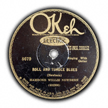

Words by Bob Dylan (most of them) (probably).
Music copied fairly exactly from McKinley Morganfield’s (aka Muddy Waters) version of the eponymous song, which was first recorded and possibly written by Hambone Willie Newbern around 1929.
Released on Modern Times (2006)
Tabbed by Eyolf Østrem
Capoed 1st fret (sounding key Bb major)
Lead guitar: open G tuning, capo 3rd fret
The lead guitar part, as well as the arrangement as a whole, is almost note for note taken from Muddy Waters’ song of the same name.
The riff between the lines is played like this on the open-tuned guitar:
A : . . . : . . . : . . . : . . . |-----------------|-----------------|-----------------|-----------------| |-----0---3-----0-|-----0---3---0-0-|---0-0---3-----0-|-----0---3---0---| |-----0---3-----0-|-3---0---3---0-0-|---0-0---3-----0-|-3---0---3---0---| |-----------------|-3---------------|-----------------|-3---------------| |-----------------|-----------------|-----------------|-----------------| |-----------------|-----------------|-----------------|-----------------|
But it can be approximated on a standard-tuned guitar:
A
: . . . : . . . : . . . : . . .
||------------------|-----------------|-----------------|------------------||
||*-----------------|-----------------|-----------------|-----------------*||
||------2---5-----2-|-0---2---5---2-2-|---2-2---5-----2-|-0---2---5---2----||
||------2---5-----2-|-0---2---5---2-2-|---2-2---5-----2-|-0---2---5---2----||
||*-0---------------|-----------------|-----------------|-----------------*||
||------------------|-----------------|-----------------|------------------||
[Intro, guitar in open G:]
D A
. : . . . : . . . : . . . : . . .
-0-0-0-|-5-5-5-5-5-5-5-5-|-5-5-5\0-3-------|-----------------|-----------------|
-------|-----------------|-------------3---|-3\--------------|---------3-------|
-------|-----------------|-----------------|-3\--0---3-----0-|-----0---3---0-0-|
-------|-----------------|-----------------|-----------------|-3---------------|
-------|-----------------|-----------------|-----------------|-----------------|
-------|-----------------|-----------------|-----------------|-----------------|
E
: . . . : . . . : . . . : . . .
|-----------------|-----------------|-----------------|-----------------|
|-----------------|---------3---0---|/7---------------|-----------------|
|---0-0---3-----0-|-----0---3---0---|/7---------------|-----------------|
|-----------------|-3---------------|/7---------------|--------/5---~---|
|-----------------|-----------------|/7---7-7---7---7-|-7-0/7-0/5-0-3---|
|-----------------|-----------------|-----------------|-----------------|
A D
: . . . : . . . : . . . : . . . :
|-----------------|-----------------|-----------------|-----------------|------
|-----------------|-----0---3---0-0-|---0-0-----------|-----0---3---0---|-5----
|---------3-----0-|-----0---3---0-0-|---0-0---3-----0-|-----0---3---0---|-5----
|-----------------|-3---------------|-----------------|-3---------------|-5----
|-0---------------|-----------------|-----------------|-----------------|-5----
|-----------------|-----------------|-----------------|-----------------|------
I rolled
D A I rolled and I tumbled, I cried the whole night long D A I rolled and I tumbled, I cried the whole night long E A Woke up this mornin', I must've bet my money wrong
I got troubles so hard, I can't stand the strain I got troubles so hard, I just can't stand the strain Some young lazy slut has charmed away my brains
The landscape is glowin', gleamin' in the golden light of day The landscape is glowin', gleamin' in the golden light of day I ain't holding nothin' back now, I ain't standin' in anybody's way
Well, I did all I know just to keep you off my mind Well, I did all I know just to keep you off my mind Well, I paid and I paid; my sufferin' heart is always on the line
Well, I get up in the dawn and I go down and lay in the shade I get up in the dawn and I go down and lay in the shade I ain't nobody's houseboy, I ain't nobody's well-trained maid
I'm flat out spent, this woman been drivin' me to tears I'm flat out spent, this woman, she been drivin' me to tears This woman so crazy, I swear I ain't gonna touch another one for years
Well, the warm weather's comin' and the buds are on the vine Warm weather's comin'; the buds are on the vine Ain't nothin' more depressin' than tryin' to satisfy this woman of mine
I got up this mornin', saw the risin' sun return Well, I got up this mornin', seen the risin' sun return Sooner or later, you too shall burn
Well, the night's filled with shadows, the years are filled with early doom The night is filled with shadows, the years are filled with early doom I've been conjuring up all these long dead souls from their crumblin' tombs
Let's forgive each other, darlin', let's go down to the Greenwood Glen Let's forgive each other, darlin', let's go down to the Greenwood Glen Let's put our heads together now, let's put all ol' matters to an end
Now I rolled and I tumbled, I cried the whole night long Ah, I rolled and I tumbled, I cried the whole night long I woke up this morning, I think I must be travelin' wrong